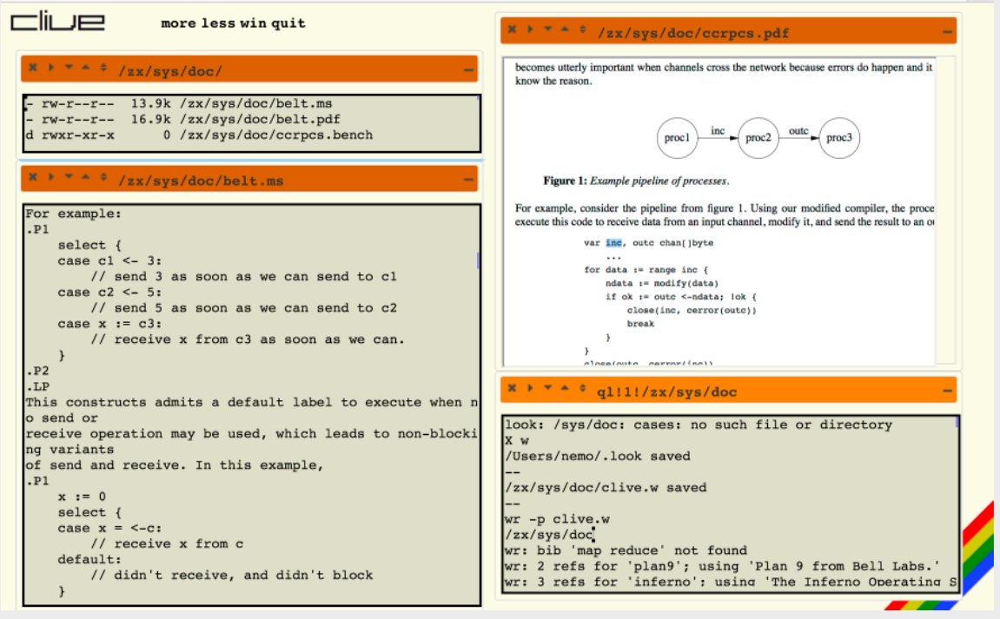

I'm a systems programmer, writing software, doing R&D in Distributed Operating Systems, Compilers & Data Bases. I'm also teaching computer programming lectures and writing software for leanXcale.

MS on CS on 1993 and PhD on CS on 1998, at Technical University of Madrid.
I implemented several programming languages and run-time systems before graduating.
Later, worked for several years on telecommunications companies, doing systems software.
Co-authored LiS, a STREAMS framework for Linux that was successfully used by several companies.
Teaching at several universities since 1995, and developing Operating Systems, with multiple papers, several books, and more than 600 citations.
I designed, built, and then used several Operating Systems, including Clive, Octopus, the Off++ kernel, for the 2K Operating System jointly with the SRG at University of Illinois at Urbana Champaign, Plan B, and Octopus.
I worked with the team that developed UNIX and contributed to Plan 9 from Bell Labs and Inferno. Jointly with Bell Labs we developed the NIX operating system, several window systems, and network file protocols. Most Plan 9 related software is kept at 9legacy.org.
Currently I'm writing and improving a high performance ultra-scalable key-value store for the leanXcale database system.
I'm also a PADI Divemaster and trained sport car driver.